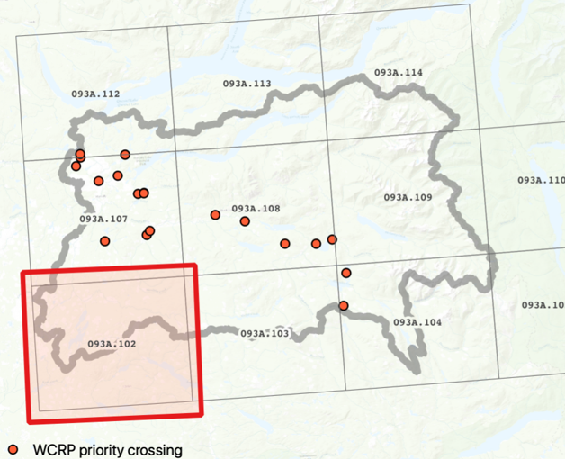

Species | Channel Gradient (%) | Mean annual discharge (m3/s) | Channel gradient (%) | Mean Annual discharge (m3/s) | Minimum Lake area (ha) | Multiplier (1.5x) |
|---|---|---|---|---|---|---|
Chinook Salmon | 0-3 | 0.46-322.5 | 0-5 | 0.28-100 | ||
(Busch et al. 2011, Cooney and Holzer 2006) | (Bjornn and Reiser 1991, Neuman and Newcombe 1977, Woll et al. 2017, Roberge et al. 2002, Raleigh and Miller 1986) | (Woll et al. 2017, Porter et al. 2008) | (Agrawal et al. 2005) | |||
Coho Salmon | 0-5 | 0.164-59.15 | 0-5 | 0.03-40 | Wetland | |
(Roberge et al. 2002, Sloat et al. 2017) | (Bjornn and Reiser 1991, Sloat et al. 2017, Neuman and Newcombe 1977, Woll et al. 2017, McMahon 1983) | (Porter et al. 2008, Rosenfeld et al. 2000) | (Agrawal et al. 2005, Burnett et al. 2007) | |||
Sockeye Salmon | 0-2 | 0.175-65 | 200 | Lake | ||
(Lake 1999, Hoopes 1972) | (Bjornn and Reiser 1991, Woll et al. 2017, Neuman and Newcombe 1977, Roberge et al. 2002) | (Woll et al. 2017) |
Modelled Anadromous Salmon Habitat Maps
High-resolution PDF maps of the Horsefly River watershed and model results can be accessed here. The watershed is divided into multiple maps sheets to allow for detailed examination of modelled spawning and rearing habitat, multiple barrier types, and priority barriers identified through this planning process. The locations of WCRP priority barriers and associated map sheet numbers are shown below. In each individual map sheet, priority barriers are symbolized using the following notation:

Connectivity Status Assessment Methods
The connectivity status assessment for anadromous salmonids in the Horsefly River watershed builds on existing connectivity modelling work undertaken by the BC Fish Passage Technical Working Group, resulting in a flexible, customizable open-source spatial model called “bcfishpass”. The model spatially locates known and modelled barriers to fish passage, identifies potential spawning and rearing habitat for target species, and estimates the amount of habitat that is currently accessible to target species. The model uses an adapted version of the Intrinsic Potential (IP) fish habitat modelling framework (see Sheer et al. 2009 for an overview of the IP framework). The habitat model uses two geomorphic characteristics of the stream network — channel gradient and mean annual discharge — to identify potential spawning habitat and rearing habitat for each target species. The habitat model does not attempt to definitively map each habitat type nor estimate habitat quality, but rather identifies stream segments that have high potential to support spawning or rearing habitat for each species based on the geomorphic characteristics of the segment. For more details on the connectivity and habitat model structure and parameters, please see Mazany-Wright et al. (2021). The variables and thresholds used to model potential spawning and rearing habitat for each target species are summarized in Table 15. The quantity of modelled habitat for each species was aggregated for each habitat type and represents a linear measure of potential habitat. To recognize the rearing value provided by features represented by polygons for certain species (e.g., wetlands for Coho Salmon and lakes for Sockeye Salmon) a multiplier of 1.5x the length of the stream segments flowing through the polygons was applied.